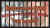

|
Redeeming the Writer Part 2 
There is a segment in Shawshank when one of the prisoners, Brooks, is released after spending much of his life behind bars. It is a long interlude depicting his exposure to "outside" life, and though I liked it and felt it worked, I wondered if Darabont ever had given serious consideration to losing it or cutting it down. ""Absolutely not. That’s
the heart of Shawshank. That’s what it’s all about. I thought the Brooks segment worked best the way it was." In fact, with the foreshadowing by the Brooks interlude of Red’s later journey from prison, Darabont did tighten the later segment.
I wondered whether that final scene with Red and Andy on the beach made Frank feel good knowing that he was going to deliver something to the audience that would really make them feel good. "Oh God yes. Well isn’t that really what filmmaking is. It’s about feeling an emotion and being able to communicate it to other people. That’s the heart of it. Yeah, it felt great. It felt great the first time we
showed it at a test screening even though we were showing our work with temp sound and everything, to see the audience kind of lifted out of their seats at the end of that movie."
Darabont acknowledges the fear that goes along with showing a film to an audience for the first time: "It’s the worst night of your life. You’re convinced that you’re having a heart attack. You’re sweating bullets. You know, it’s a work print and that alone drives you crazy. You’ve stolen the music from other movies, there are a million sound things that have to be attended to. It’s the worst
possible technical way you can show a movie to an audience and you just suffer through every inch of it. The audience tends to be responding to it on an emotional level and that’s what you need a test screening for and that’s why it’s valuable, to see what works and what doesn’t."
The preview process can be a dangerous trap for a filmmaker. The temptation to change an artistic vision, to mold it to what the audience wants and expects is enormous." That is a danger of course. My own personal experience on Shawshank, it was very valuable. It really told me that the movie was working and it pointed out, painful though it was, when parts of the movie weren’t working. There’s
nothing more valuable than having somebody point to that something doesn’t belong there. You can sense it when you’re there(in the preview room), you can hear the audience breathing, you’re so in tune to every little ripple in the audience. It’s great when you agree with it and it’s great when the studio is not using the test screening process as a club to beat a filmmaker over the head with." Darabont was very happy
working with Castle Rock as his studio and felt that Shawshank was protected by them and he was given absolute freedom to create.
Darabont doesn’t get out to the movies as much as he’d like, but he is a certifiable laserphile. The director plays his 800 plus disc collection through a Pioneer Elite CLD-97 and a Pioneer Elite 60" rear projection television. "This is kind of an interim system because what I’ve been hoping for is a Runco 900 projector with a Faroudja line doubler. I’ll be checking into it probably next
year. For now I’ll just settle for the system I’ve got. I’m renovating my house at the moment and just a ton of money’s going down the chute. I just felt weird to spend that kind of money to get that system. The best I’ve seen is the Runco with the Faroudja. That was the closest thing I’ve seen to projected film. It was amazing."
"I am not quite as demented about sound as a lot of people seem to be." Frank doesn’t have a surround sound system for now, though he will invest when he does his projection system. "I tossed on Apocalypse Now, you know the helicopter scene and it just kind of blew me out the wall. I’ve got a Pioneer, their big Kahuna, a 97." Apocalypse Now is one of Frank’s favorite
lasers. "That is a really amazing transfer. That is a great disc. It’s not only a great war film, it’s a great piece of opera, and it’s also a great piece of introspective soul searching. I love the Aliens Special Edition that restored the missing material because I thought most of it was fabulous." The Mask, naturally, is another laser disc that Darabont thought looked really terrific. There are still some
unopened lasers that Darabont is looking forward to ripping the cellophane, like The Howling: ""I love it. It’s great, it’s great. In fact I’ve kind of gotten to know Joe Dante a little bit and I always compliment on it when I see him. It’s one of those movies I’ve really seen that kind of effects work, amazing stuff. It may be old hat now, but if you think back it was amazing then. They had a problem finding
the negative for the laser disc release, which is kind of extraordinary to me."
"I’m looking forward to is the director’s cut of The Wild Bunch. It’s one of my favorites. I’ve been bitching about a decent version of the director’s cut, widescreen, and now there’s coming out with that thank God. There’s a movie that Sidney Lumet made called The Offence starring Sean Connery. An absolutely fantastic riveting film. Oh God I wish somebody would put that
out."
Director Darabont feels that the laser disc medium is a great learning tool for filmmakers. "I’ve stepped framed through certain sequences just to see how they were shot. The sequence in The Deer Hunter when they escape from the POW camp, when escape from that hell hole and they’re playing Russian roulette and De Niro turns the gun on their captures and there’s that incredible shoot-out...it
happens so fast and it’s so powerful and so visual and you know everything that’s happening on some sort of almost subliminal level. It’s absolutely brilliantly shot." There are times when the writer consciously avoids certain films on laser. "When I was writing Frankenstein, I was not, very distinctly not, looking at other Frankenstein movies. I didn’t want that to pollute my process. With The Fan,(Darabont
did a rewrite on the new Tony Scott movie.) I watched some baseball movies, if for nothing else to get a sense of the visual mythology that’s possible with a baseball film."
Like every laser lover, Darabont has some pet peeves about the industry. "Laser rot would have to be number one on my list. It would seem they could do something about that. Another peeve of mine was that they would always release these films pan and scan and then later on they would come out with the letterbox so you have to buy it twice. Nowadays, they come out with it simultaneously both
ways. But that hasn’t solved the special edition pet peeve, which is how many .......versions of Terminator can I buy. It’s nuts. They’ll do the original. Then they’ll do the one with the restored cut. Then they’ll do the one with the restored cut and the commentary. There could be seven versions of Terminator 2 out there. Give it to us once or twice, don’t give it to us seven times. It makes me
crazy."
Speaking of multiples, Shawshank may be reappearing with additional materials included. ""In fact we’re talking now of possibly doing a special edition of Shawshank. Hopefully, it will happen. It wasn’t like some sneaky plan to sell you two versions of it, but I have to say there have been times when I thought, ‘there’s a conspiracy going on here. Now there’s this version of the
thing.’ On Shawshank, certainly the commentary track is something people have been asking for." Will Darabont be recruiting any other principles from the movie to participate in the special edition? "Actually, I think it would be great to do it as a group effort. A couple of interviews couldn’t hurt and I wouldn’t mind showing a few of the deleted scenes."
"The published screenplay for Shawshank is going to be out in October and on of the things that I decided to with it is kind of along the lines of what people do with a special edition laser disc, which is kind of examine what went on in terms of how the script start out and how the movie wound up. What’s the difference between what’s on the page and what’s on the screen and more to the point,
why. What I did was I wrote a fairly involved addendum to the actual screenplay that describes scene by scene why stuff changed. It was a tremendous amount of fun to write and I think it’s something that folks are going to really enjoy. It was great to look back and examine the experience at your leisure."
Laserphiles seem united on many fronts including their hatred of television commercials and impolite theater audiences. ""Commercials are really the devil’s work. I hate ‘em. I remember doing a direct to cable movie back in ’89, Buried Alive, for USA cable, which is commercial cable, so sure enough, every ten minutes, you try to sustain mood or build mood, you know it was a thriller and building
mood is a delicate thing and every ten minutes along comes this "Lucky Dog" ad—come on, give me a break." Much of Frank’s theater going is at Director or Writer’s guild screenings. "You have a better chance for a decent audience. You know that you’re going to get a technically well projected film. You know people aren’t going to be talking, chatting, throwing popcorn throughout the thing. When I go to a
theater I like to concentrate on the film that’s in front of me. Chuck Russell and I did The Blob. It’s a fun movie. We still get fan mail on it. You remember the scene in the theater where this one guy is sitting behind our main characters, talking through the movie. You notice that he’s the first one that the Blob eats. That’s my commentary on people who chatter through a movie. Wishful thinking on my part."
"Once I’m done with The Fan, I owe Castle Rock two scripts that I’m going to be writing that I’m attached to direct. I’ll either be doing one or both depending. One is adaptation of another Stephen King novella called The Mist, which is probably one of the scariest hundred pages ever written. So I am going to get back to my roots and do a horror movie somewhere down the road. The other
one is a Robert McCammon novel called Mime. An absolutely fabulous writer. I think he’s only had one thing adapted and was an episode of the Twilight Zone revival that William Friedkin directed."
Any traps that were sprung when making Shawshank. "Every day is a set of traps that one needs to guard against. I think tops on my list is the self doubt trap. You go in with the best of intentions. In fact I was talking to Robert Benton(Nobody’s Fool, etc.) about this. We were both on a European press junket with our respective films in February, the feeling like a failure syndrome because you go
in with these very keen ambitions and then the day always winds up as a set of compromises in one way or another because you don’t have enough hours in the day to do what you want to do. Benton put it into words when he said that’s why every day of shooting feels like a failure. This coming from him. Okay, so I figure I’m in pretty good company. But what Shawshank taught me was that it’s not a bad thing necessarily if you
don’t have enough hours in the day you wind up thinking on your feet and relying on your instinct and sure enough the thing can turn out pretty well in the final analysis. So maybe next time I won’t be feeling like such a failure every day."
|
|
|
|

The Movie Poster Archive includes extensive poster images from the films of stars like Susan Hayward, Kirk Douglas, Katharine Hepburn and many more. Our featured star is Lana Turner.

The Feature Archive has articles ranging from Akira Kurosawa to Blonde Bimbos.
Movie Rage: Death in the Aisles
Everyone knows what it feels like to get angry at the movies these days. Here's a humorous but not so delightful view of big screen misery.
Gotta Dance
Fred and Ginger tapped their way into the hearts of movie fans everywhere. Stu Kobak takes a look at some of those dance movies that gifted audiences toe-tapping pleasure. Click on the image to get in on the beat.
Puttin on the Ritz

Fred Astaire and Cyd Charisse bring Silk Stockings to life, a remake of Ninotchka, one of many films successfully turned into musicals by the Hollywood dream factory. Read all about remakes into musicals by clicking on the divine dancers.
Sturges Emerges
Preston Sturges was Hollywood's resident comic genius for more than a decade. His movies are timeless. Click on his image to read all about it.

Is North by Northwest Hollywood's definitive exploration of the nose? From schnozzles to beezeers, film mavens make the most of the foremost. Click on Mount Hitchcock for more.
 
DVDPlanet is the DVD incarnation of legendary laser retailer Ken Crane's. Deep discounts and serious service.
 
The Big Combo has style to spare in reviewing films and producing feature articles. Check out their special "Lingo" section.

Reviews of affordable remote controls in the market place. Codes and tips as well.

Looking for information about widescreen movies and hardware. The Widescreen Movie Center is the place to go.

The National Film Preservation Foundation (NFPF) is the nonprofit organization created by the U.S. Congress to save America's film heritage.

News, information, features about current films in theaters and in the pipeline. Easy to use interface.

The official site for information about the great comic director. A treat for connoisseurs of classic Hollywood madcap.
Take a look at the merry images of America's gift to the movies: Hollywood Musical Posters are featured from The Movie Poster Archive.
|